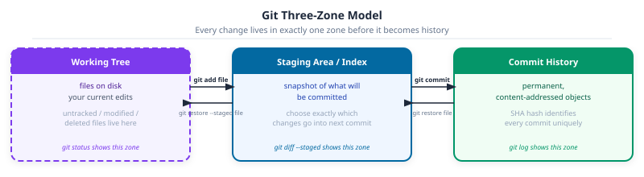
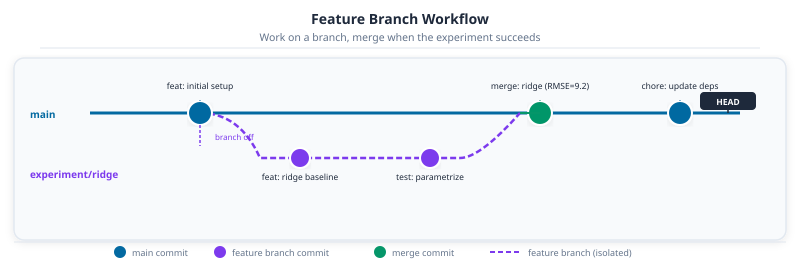

Part 16: Git and GitHub for Data Science

DS-MLOps Dev Tools
Python 3.12+ | Author: Anthony Faustine
You rename a function and the rest of the pipeline breaks. You want to undo it – but you saved over the original. Git is your time machine: every commit is a checkpoint you can return to, and every branch is an isolated experiment that only merges when it succeeds. On a team, it’s also what keeps two people from overwriting each other’s work.
The grade-predictor project is now typed and linted. This chapter puts it under version control and connects it to GitHub – after which Part 17 adds a test suite.
Callout markers used throughout this chapter are explained on the book cover page.
Every data science project eventually breaks in the same three ways: the code changed and nobody knows when, an experiment worked but can’t be reproduced, and two people edited the same file. Git prevents all three. The habits you set up here carry forward through every chapter that follows.
0. Installing and Configuring Git
Install git
Git doesn’t ship with every operating system. Check if it’s already present:
git --version
# git version 2.49.0If it’s not installed:
# macOS: via Homebrew (recommended)
brew install git
# macOS alternative: install Xcode Command Line Tools (includes git)
xcode-select --install
# Ubuntu / Debian
sudo apt update && sudo apt install git
# Windows: download the installer from the official site
# https://git-scm.com/download/win
# Git for Windows includes Git Bash, a Unix-style terminal, which is recommendedFirst-time identity configuration
Every commit records the author’s name and email. Set them once globally before making any commit:
git config --global user.name "Your Name"
git config --global user.email "you@example.com"
git config --global core.editor "code --wait" # use VS Code as the commit editor
git config --global init.defaultBranch mainVerify the result:
git config --list --global Key Concept: Global vs local git config
–global writes to ~/.gitconfig and applies to every repository on the machine. Omit it and the setting goes to .git/config inside the current repo only. Use –global for your identity; use local config to override settings for a specific project – for example, a work email for a client repo.
Connect to GitHub (or GitLab)
You need an account on a remote hosting service to push code and collaborate. GitHub and GitLab are the two most common choices for DS projects:
| GitHub | GitLab | |
|---|---|---|
| Free private repos | Yes (unlimited) | Yes (unlimited) |
| CI/CD included | GitHub Actions | GitLab CI |
| Package registry | GitHub Packages | GitLab Container Registry |
| Best for | Open source, community | Self-hosted, enterprise, full DevOps |
The fastest way to authenticate is an SSH key. Generate one and add it to your account:
# Generate an Ed25519 key (replace with your email)
ssh-keygen -t ed25519 -C "you@example.com"
# Start the SSH agent and add the key
eval "$(ssh-agent -s)"
ssh-add ~/.ssh/id_ed25519
# Print the public key and copy it into GitHub / GitLab
cat ~/.ssh/id_ed25519.pubOn GitHub: Settings → SSH and GPG keys → New SSH key → paste the public key.

Alternatively, use the GitHub CLI (gh) to authenticate without manually copying keys:
# Install gh
brew install gh # macOS
sudo apt install gh # Ubuntu
# Authenticate (follows a browser-based flow)
gh auth loginTest the connection:
ssh -T git@github.com
# Hi username! You've successfully authenticated.Goal: Confirm git is installed and configured. Run
git –version, set your user.name and user.email, and create a GitHub or GitLab account if you do not already have one. Add an SSH key and confirm the connection with ssh -T git@github.com.
git --version git config --global user.name "Your Name" git config --global user.email "you@example.com" ssh -T git@github.com
1. What Git Tracks and What It Must Not
Git is a time machine for code. It isn’t a time machine for data, models, or secrets. The single most important setup decision for a DS project is getting .gitignore right before the first commit, because a file committed once is in git history permanently.
A DS .gitignore covers five categories:
# Python runtime
.venv/
__pycache__/
*.pyc
.pytest_cache/
dist/
*.egg-info/
# Secrets: never in git, ever
.env
*.env
.env.local
# Data: too large for git; use cloud storage or DVC
*.csv
*.parquet
*.pkl
*.h5
data/raw/
data/processed/
# Model artifacts
models/
*.pt
*.onnx
*.joblib
# Jupyter
.ipynb_checkpoints/
*-checkpoint.ipynb
# IDE
.idea/
.vscode/settings.jsonAdd this to grade-predictor/.gitignore before running git init.
Key Concept: Git tracks code. Data and secrets belong elsewhere.
A 2GB CSV committed by accident lives in history even after git rm – you have to rewrite history to fully erase it. Secrets committed to a public repo are searchable and must be rotated immediately. Set up .gitignore and run git status before every first commit in a new project. Every time.
2. The Three-State Model
Every file in a git project lives in one of three states: the working tree (what’s on disk right now), the staging area (what will go into the next commit), and the commit history (what’s permanent). Understanding these three states is what separates confident git use from “type commands and hope”.
git init
git status # see all three states
git add src/grade_predictor/core.py # move specific file to staging
git status # confirm it moved
git commit -m "feat(core): add compute_grade function"
git log --oneline # inspect history
The flow: make changes in the working tree, select which changes belong in this commit with git add, then seal them into history with git commit. Changes left unstaged are visible in the working tree but invisible to the next commit.
git diff shows what’s in the working tree but not yet staged. git diff --staged shows what’s staged but not yet committed. Running both before committing is a habit worth building.
Common Mistake: git add . adds everything
Including .env, CSV files, and anything else that slipped past .gitignore. Always run git status before git add. Stage specific files by name: git add src/grade_predictor/core.py. Use git add -p to stage hunks interactively when a file has multiple independent changes.
Goal: Initialize a git repo in
grade-predictor. Add .gitignore first. Then run git status and confirm .env and .venv/ do not appear in the untracked list. Stage and commit only the source files.
git init git status # .env and .venv should NOT appear here git add pyproject.toml src/ .gitignore git commit -m "feat: initial grade-predictor project setup"
3. Conventional Commits
A git log is only useful if the messages are readable. git log --oneline on a project where every message is “fix” or “update” or “changes” tells you nothing. Conventional commits solve this with a consistent format: type(scope): description.
| Type | When to use |
|---|---|
feat |
New capability: a new model, a new pipeline step, a new analysis function |
fix |
Corrects a bug: wrong normalization, off-by-one in a split, a missing fillna |
refactor |
Restructures code without changing behavior: extract a function, rename |
test |
Adds or updates tests only |
docs |
Documentation only: docstrings, README, notebook prose |
chore |
Tooling: update dependencies, fix CI, update lockfile |
data |
Data changes: new dataset version, updated schema, changed preprocessing |
Real commit messages from a DS project log:
feat(model): add gradient boosting baseline, 5-fold CV accuracy=0.84
fix(preprocessing): normalize features before train/test split, not after
data(university): add 2025 cohort, student_id format unchanged
refactor(core): extract grade_to_letter from compute_grade
test(core): parametrize grade boundary tests for all five letter grades
chore: bump scikit-learn to 1.7, update uv.lockEach message answers: what changed and why does it matter? Two months from now, git log --oneline with messages like these tells the whole project story.
commitizen enforces this format automatically – Part 18 covers setup. For now, write the messages by hand.
Pro Tip: The scope is optional but valuable
fix: normalize features is fine. fix(preprocessing): normalize features before split is searchable. git log –oneline –grep=“fix(preprocessing)” finds every bug fix in the preprocessing layer in one command. This matters when a production issue arrives at 2am and you need to trace exactly when the normalization logic changed.
Activity 2 - Write Three Commits
Goal: Make three separate conventional commits to grade-predictor: one feat for adding a function to core.py, one test for adding a test, and one docs for updating the README. Then run git log –oneline and confirm all three messages follow the format.
4. Branches for Experiments
The main branch of a project should always be in a working state. New features, experiments, and bug fixes belong on separate branches. In DS work this applies especially to model experiments: a branch per experiment means you can run them in parallel, compare results, and abandon a dead end without any cleanup.
git checkout -b experiment/ridge-regression # create and switch in one step
# ...make changes...
git add src/
git commit -m "feat(model): ridge regression baseline, RMSE=9.2"
git checkout main
git merge experiment/ridge-regression
git branch -d experiment/ridge-regression # clean up after merging
Naming conventions that work well for DS projects:
| Pattern | Use for |
|---|---|
feature/<name> |
New capabilities: a new pipeline step, a new API |
experiment/<name> |
Model experiments: may be abandoned without guilt |
fix/<name> |
Bug fixes: wrong calculation, broken test |
chore/<name> |
Dependency updates, tooling changes |
Pro Tip: Branches track code. MLflow tracks metrics.
A branch captures what code produced a result. MLflow (or a simple results CSV) captures what the result was. Use both together: the branch name references the experiment, the MLflow run name references the same experiment. Two months later you can find both the code and the metric.
Goal: Create a branch
experiment/weighted-average. Change the default weights in compute_grade from (0.30, 0.45, 0.25) to (0.25, 0.50, 0.25). Commit the change with a feat(model) message that states the new weights. Merge the branch back to main and delete it.
git checkout -b experiment/weighted-average # ...edit core.py... git add src/ git commit -m "feat(model): change weights to 0.25/0.50/0.25, favour final exam" git checkout main && git merge experiment/weighted-average
5. Pull Requests
A pull request is a request to merge a branch into main, plus a structured conversation about the change. On a solo project it’s still worth opening PRs: the PR description forces you to articulate what changed and why, and CI runs automatically.
For DS work, a useful PR description answers:
- What changed (one sentence summary)
- Why (what problem does this solve or what experiment does this run)
- What metrics were observed, if any
- What tests were added or updated
- Any known limitations
git push -u origin experiment/ridge-regression
gh pr create \
--title "feat(model): ridge regression baseline" \
--body "Adds ridge regression (alpha=1.0) as a second baseline. RMSE=9.2 vs linear=10.4 on held-out 20%. Tests added for predict() signature and output shape."The gh CLI creates the PR without leaving the terminal. CI starts automatically on the push that opens it.
6. GitHub Actions for Automated Testing
GitHub Actions is a CI/CD platform that runs jobs on every push or pull request. The job definition is a YAML file in .github/workflows/. Here is a minimal workflow for grade-predictor:
# .github/workflows/test.yml
name: Test
on: [push, pull_request]
jobs:
test:
runs-on: ubuntu-latest
steps:
- uses: actions/checkout@v4
- name: Install uv
uses: astral-sh/setup-uv@v3
with:
version: "latest"
- name: Install dependencies
run: uv sync --extra test
- name: Run tests
run: uv run pytest tests/ --override-ini=addopts=
env:
PYTHONWARNINGS: ignoreStep by step:
actions/checkout@v4: clones the repo into the CI runnerastral-sh/setup-uv@v3: installs uv (no Python setup needed; uv handles it)uv sync --extra test: installs core + test dependencies only, no dev or modellinguv run pytest tests/: runs tests inside the project environment--override-ini=addopts=: strips localaddoptsfrompyproject.tomlthat may reference local paths not present in CI
When the job fails, GitHub shows the full log. Reading CI logs is a skill – look for the first FAILED or Error line, not the summary at the bottom.
Example: Reading a CI log
A failing test produces output like:
FAILED tests/test_core.py::test_compute_grade_defaults - AssertionError: assert 83.5 == 84.25
The important parts: the test file (tests/test_core.py), the test name (test_compute_grade_defaults), and the assertion that failed (83.5 != 84.25). The number tells you which weights were used: 83.5 is the old weights, 84.25 is the expected value with the new ones. This is why the test exists.
Goal: Create
.github/workflows/test.yml in grade-predictor. Push the branch to GitHub. Watch the Actions tab. If CI fails, read the log and fix the issue.
mkdir -p .github/workflows # create test.yml as above git add .github/ git commit -m "chore: add GitHub Actions test workflow" git push -u origin main
Capstone - Version grade-predictor
Bring the full grade-predictor project under version control.
-
Add a proper DS
.gitignorecovering Python, secrets, data, and IDE files -
Initialize a git repository:
git init -
Make three conventional commits: one for the project setup, one for
core.py, one for the test file - Create a new repository on GitHub (without README, without .gitignore)
-
Push:
git remote add origin <url> && git push -u origin main - Add the test workflow. Push and confirm CI runs green
Next: Part 17: Testing with pytest – tests for the code you’ve just versioned.